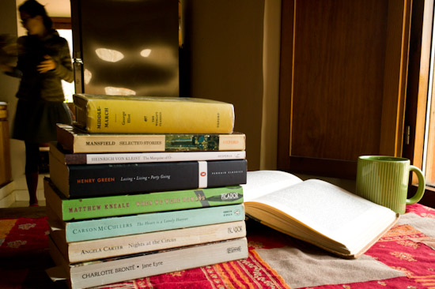

Top Five Reads of 2012

Like lots of bloggers around the literary web, the end of the year calls for a review of my past year in reading. Recalling all the great books I’ve immersed myself in during 2012 is dizzying. And choosing from them is a discipline. I’m too inclined to burst out with, “They were all so good! It’s impossible to pick.” But I will choose, biting my tongue.
Jane Eyre by Charlotte Brontë
Like lots of others, I first read Jane Eyre in school. I didn’t remember but a few scenes of fire as I reread, but I think I shared the sense of being swept away by the story with my younger self. How could I have forgotten the scale of the book’s drama, and how difficult it was to put down?
Middlemarch by George Eliot
Middlemarch is on this list for its longevity or density or both. I read this book on the beach as well as on cold nights securely tucked in bed. Because of its great length it’s one of those books that sucks you in, and when you’re done you feel like something is missing from your life. I was very surprised by Eliot’s style, by how she could manage so many portraits of so many characters. But it is Dorothea who stands out as one of the most original female characters in literature. I loved reading about her from the very beginning, and yes, I cried at the end.
Reading Like a Writer by Francine Prose
Out of all the grammar books and books about writing that I’ve dug into this year, Reading Like a Writer was the best and most fun to read. Not only did I learn about writers I might never have read, like Henry Green and Heinrich Von Kleist, but I also learned the invaluable lesson of reading slowly. This has been a year of many technical discoveries for me, but none so great as the discipline of making sure I catch every single word, sentence, paragraph and chapter. While slow reading for greater comprehension sounds obvious, it’s hardly easy and only comes with practice.
Instead of reading book after book, I would do well to reread and reread Stoner. To learn the quiet art of the novel, to discover the simple power of John Williams’s prose. I sometimes wonder if Stoner was so impressive because Williams could somehow manage to write energetically about hardly anything at all, or if it was because he wrote so calmly about the biggest moments of an entire lifetime. This is a book to come back to year after year.
The Heart Is a Lonely Hunter by Carson McCullers
Having just finished The Heart Is a Lonely Hunter, I’ve started on Virginia Carr’s The Lonely Hunter, a biography of Carson McCullers. It has been impossible to forget about the writer and the sensitivity of her story after putting the book down. McCullers was a bright star who burned brightly for only a short time, though she had enough time to write several great books. The Heart Is a Lonely Hunter wrenched my heart and had me keenly jealous of McCullers’s skilled writing at such a young age.
And here are my tongue bitings, the runners up:
This year I’ve been poking through Katherine Mansfield’s short stories and they are nothing short of wonderful. I also continued on my Angela Carter streak with Nights at the Circus and some of her strange short stories like The Bloody Chamber. And I can’t not mention my enjoyment of When We Were Romans by Matthew Kneale who is more than just a writer I’ve discovered, but someone with whom I’ve been able to talk about writing.
So there it is: Happy New Year and new readings!
What about you, dear readers? What were your favorite reads of 2012?
Commentary for Top Five Reads of 2012
· · · · · · · · · · · · · · · · · · · ·
1 On Saturday 29 December 2012 Mike Walker wrote:
Happy Holidays and New Year, Amber.
This year my favorite is the Collected Poems of Jack Gilbert. I first heard of him earlier this year and snapped it up as soon as it came out. I was then very saddened to hear he died only a few weeks ago. It’s one of those I’ll likely read once a year.
Here’s to wearing out our library cards in 2013!